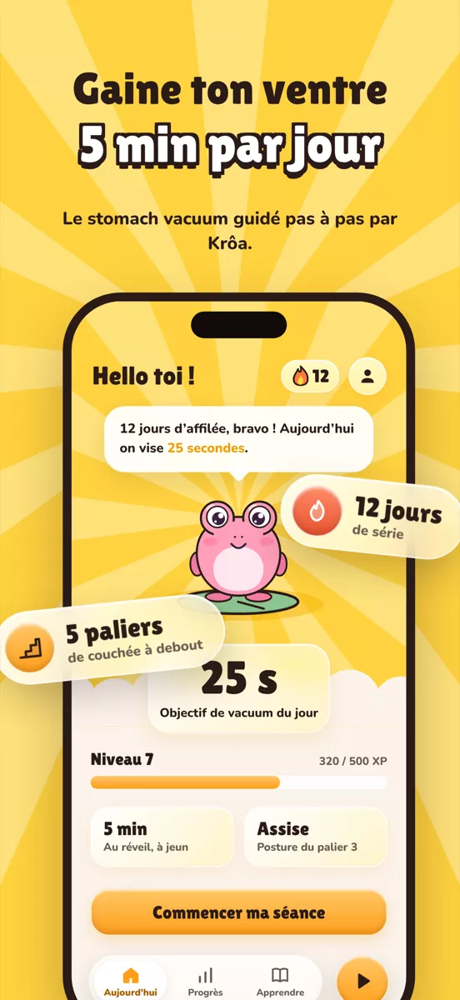
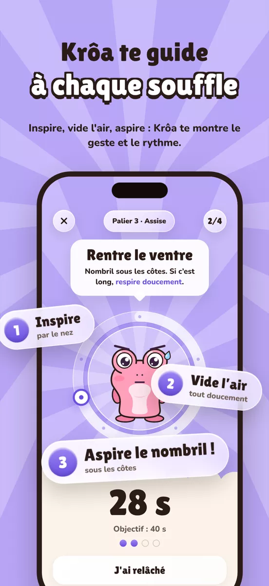
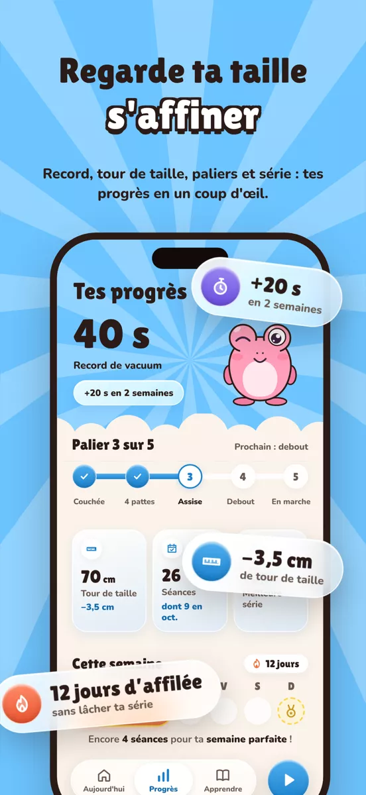
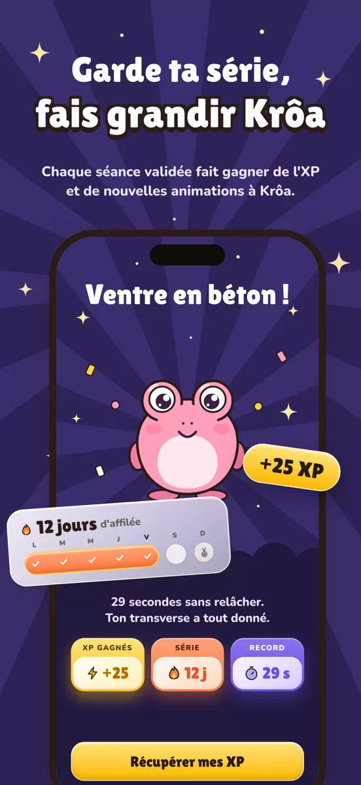
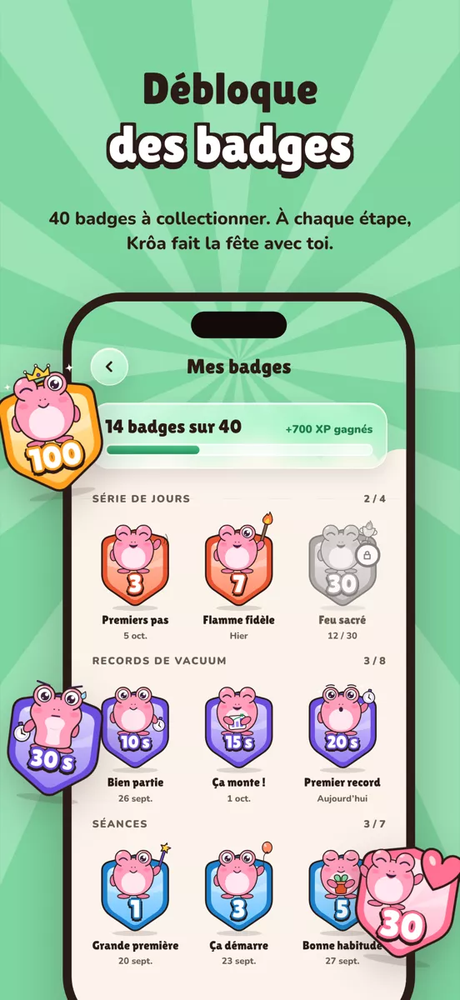
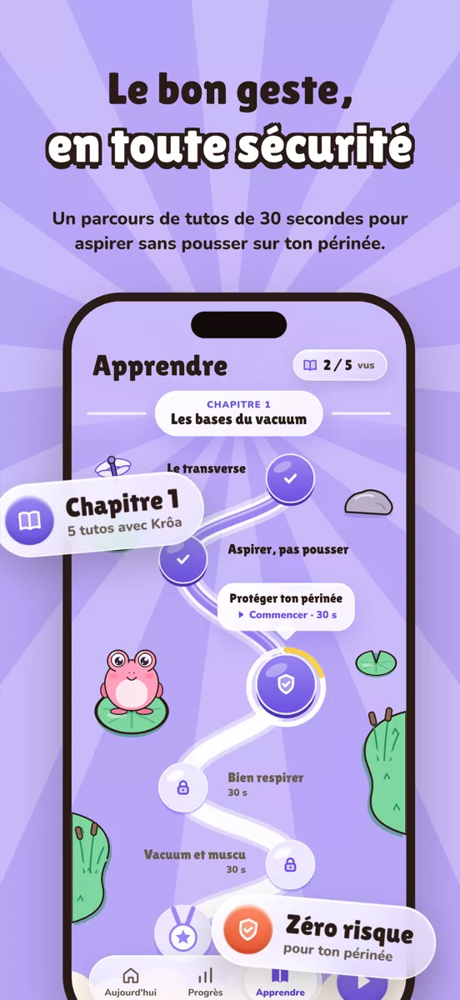

Une séance, cinq temps
Le stomach vacuum muscle le transverse, le muscle profond qui gaine ta taille comme une ceinture naturelle. Krôa mime chaque phase, ton iPhone vibre pour marquer le rythme. Aucun son : tu peux t'entraîner partout.
- 1
Inspire
Remplis-toi d'air, tranquillement.
- 2
Expire tout
Vide l'air jusqu'au bout.
- 3
Rentre le ventre
Nombril sous les côtes, et tiens.
- 4
Relâche
Doucement, sans forcer.
- 5
Récupère
Souffle avant la suivante.
Un coup d'œil dans l'app
Un ciel de couleur par écran, du verre partout, et Krôa au centre.






Pensée pour tenir dans la durée
Quelques minutes par jour suffisent. Le plus dur, c'est de commencer : VACO s'occupe du reste.
En un tap
Ouvre l'app, touche « Commencer ma séance ». La séance continue sur l'écran verrouillé et dans la Dynamic Island.
Ta série de jours
Chaque séance terminée l'allonge. Un jour de repos par semaine ne la casse pas.
40 badges
De l'XP, des niveaux, des badges à collectionner. Et Krôa qui se dessine une taille fine en même temps que toi.
Le bon geste
Des micro-tutos courts : bien respirer, placer ton nombril, protéger ton périnée.
Tes progrès
Record de vacuum, meilleure série et, si tu veux, ton tour de taille une fois par semaine.
Tes données en Europe
Ça marche hors ligne. Ta sauvegarde est sur des serveurs dans l'Union européenne, et tu peux tout supprimer depuis l'app.
5 postures, de 10 à 60 secondes
La difficulté monte toute seule, séance après séance : la durée de vacuum s'allonge, puis une nouvelle posture se débloque.
- 10 sCouchéePalier 1
- 15 sÀ quatre pattesPalier 2
- 20 sAssisePalier 3
- 20 sDeboutPalier 4
- 60 sEn mouvementPalier 5
Ta santé d'abord
- Pratique à jeun, jamais dans les 2 heures après un repas.
- Aspire vers le haut, ne pousse jamais vers le bas.
- Enceinte, après un accouchement, une opération, ou en cas de hernie, d'hypertension ou de douleur : demande d'abord l'avis d'un professionnel de santé.
- Arrête dès que ça fait mal ou que la tête tourne.
Prête pour ton premier vacuum ?
VACO arrive très bientôt sur l'App Store, gratuitement, pour iPhone.
Une question ? Écris-nous